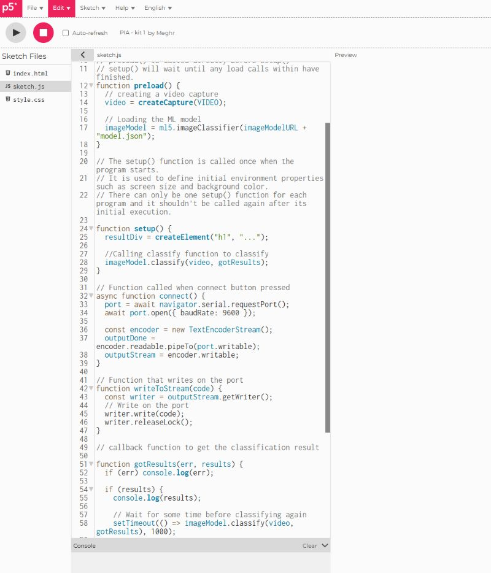

Garbage Sorting
An introductory AI project focused on supervised learning concepts and image classification theory.

Project Details
This project explores the fundamentals of artificial intelligence and machine learning classification systems through basic JavaScript and Sketches.
The goal was to better understand how supervised learning models categorize and process data.
Tools Used
- JavaScript
- p5.js